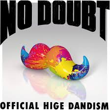
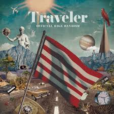
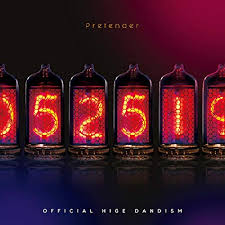

左から「ノーダウト」「Traveler」「Pretender」となっておりこの三種類の中に収録されている中から３つおすすめを紹介しようと思う。
１つ目は、「ノーダウト」、この曲はリズムが早くテンションを上げたいときにおすすめだ。
２つ目は、「ビンテージ」、今日という思い出もいつかビンテージなど言いながら笑いあえたらいいという意味が込められた歌詞が心に刺さるような曲。
３つ目は、「Amazing」、この歌もアップテンポな曲で人生の可能性を歌っているため、明るい気持ちで歌うことができる。